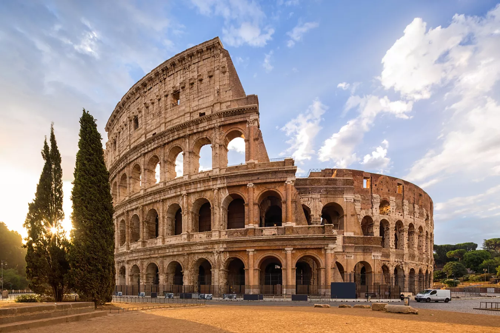
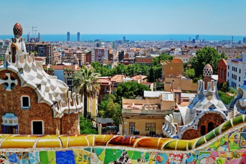

去除土耳其 · 无自驾 · 巴黎完整日
西安出发直入罗马，增加佛罗伦萨和巴塞罗那，南法只留尼斯精选，最后巴黎完整一天。
新版以低强度为优先：不自驾、减少短途飞机、拖箱日用出租接驳；地图细化到酒店、景点、餐饮点之间，每段都能打开 Google Maps。
15 天
5 个住宿点
70 段路线
6 种交通颜色



真实地图 + 细路线
按天查看景点到景点的路线
地图线段表达每天酒店、景点和餐饮点之间的顺序；精确步行/公共交通路径请点击每段的 Google Maps 路线。
酒店定位
每站建议住在哪个区域
每个酒店区都能直接打开 Google Maps，方便按预算继续筛酒店。
怎么玩
每个城市最值得玩的内容
按城市解释为什么值得停留、主打体验和适合的节奏；南法从深度版压缩为尼斯精选。
候选景点池
每个城市可替换/加选的景点
这些不默认塞进每日路线，避免行程过重；星级是本路线优先级，按体力、天气、预约情况从同城候选里替换。
逐日路线
每天从哪里到哪里
每张卡片按当天顺序列出酒店、景点、餐饮和交通方式；景点后的星级代表本路线推荐优先级。
交通指南
跨城与市内怎么走
跨城优先选择高铁/火车，尼斯到巴塞罗那保留一次短飞；市内按强度选择步行、地铁或出租。
顺路餐饮
具体餐厅跟着当天路线走
不单独绕路追餐厅，早餐靠酒店、午餐夹在景点之间、晚餐靠当天终点或酒店区；热门店出发前再查营业和预约。
预约指南
需要提前订的景点
优先锁定限时入场、排队成本高、或当天票不稳定的景点。
注意事项
出行前和路上的关键提醒
本地图像
图片资源已放入本地文件夹

资料入口